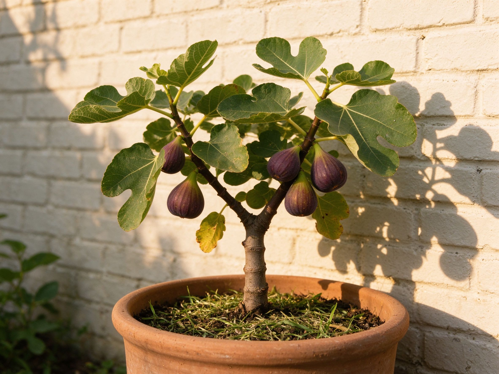

Growing Figs in Cold Climates: Containers, Root Restriction, Winter Storage
Figs are sold as zone 7–10 plants, which is true of the roots and not really true of the fruit. Gardeners in zone 5 and 6 pick ripe figs every year — not by fighting the climate, but by working with two facts: a fig fruits best when its roots are cramped, and a fig needs a dormant winter more than a warm one.
The Two Halves of the Problem
Winter cold: fig tops die somewhere around 15–20 °F (−9 to −7 °C), roots survive a bit lower if mulched. Everything above the ground is the fragile part.
Summer length: most common figs fruit on new wood, and the main crop needs roughly 90–120 frost-free days to ripen. In a short season, anything that delays new growth in spring costs you ripe fruit in September.
So the strategy is: keep the plant small and warm, start it early, and put it somewhere cold but not freezing for winter.
Varieties That Actually Ripen
- Hardy Chicago ('Chicago Hardy') — the standard for cold climates; dies back and regrows, fruits on new wood, ripens in a short season.
- Brown Turkey — widely available, reliable, fruit a touch later.
- Celeste — early and sweet, smaller fruit, good in containers.
- Florea — very early, small crop, excellent for zone 5.
Skip the big commercial varieties sold for California. They need a season you don't have.
Method 1: The Container (Most Reliable)
A pot solves both halves at once — you can move it, and a cramped root run pushes the tree into fruiting instead of growing wood.
- Start with a 15–25 gallon pot and a free-draining mix, not garden soil. A fig in a big pot will happily fill it in two seasons.
- Site it against a south or west wall — reflected heat is worth several weeks of season.
- Water consistently. Figs split and drop fruit when moisture swings. In summer, a potted fig may need water daily in heat.
- Feed lightly. Too much nitrogen gives you leaves. From June, shift to a tomato-type feed higher in potassium.
- Pinch the growing tips in late June. On each branch, pinch off the last inch of new growth. This stops the branch extending and pushes the plant's energy into the small figs already forming. It's the single most useful trick in a short season.
- Let it go dormant. Don't fight leaf drop in autumn. Stop watering as leaves yellow, and let the plant defoliate.
Method 2: In the Ground, With a Trench
In zone 6–7, planting deep and burying the trunk works and needs less space than a pot.
- Dig a hole and plant the fig so that 4–6 inches of trunk sit below the surrounding soil line. Roots go deeper where soil stays warmer.
- Choose a protected south wall, away from winter wind.
- After leaf drop, cut the trunk back to 12–18 inches and mound 6–12 inches of dry mulch (straw, leaves) over the crown, then a bucket or inverted pot over the stub to keep water out.
- Uncover in spring once hard frost has passed; new shoots come from the buried crown.
Winter Storage: The Numbers That Matter
For a potted fig, dormant storage is the whole game:
- Temperature: 25–45 °F (−4 to 7 °C). Above 50 °F it wakes up and burns stored energy in the dark; below 20 °F roots and trunk start to suffer.
- Dark, and stable. An unheated garage, a cool basement corner, a shed. Temperature swings are worse than steady cold.
- Water sparingly — a cup every 4–6 weeks, just so the mix doesn't go bone dry. Overwatering in storage is the usual way people lose a fig.
- Move it out in spring when nights stay above freezing; a fig leafing out in the garage then getting frozen outside loses the crop.
Pruning: Less Is More
Prune in late winter while dormant, and keep it simple: remove dead wood, thin crowded branches, and keep the framework low and open so light reaches the fruit. Don't hard-prune a young fig — you'll spend the season regrowing wood instead of ripening figs. Repot with root pruning every 3–4 years; that root restriction is what keeps a container fig productive rather than leafy.
What Goes Wrong
- Lots of leaves, no figs. Too much nitrogen, too much root space, or no pinching. Fix the feed first.
- Fruit that never ripens. The season ran out — pinch earlier, choose an earlier variety, and get the plant into sun.
- Splitting figs. Uneven water. Mulch the pot surface and water steadily rather than in bursts.
- Winter kill in a pot. The pot froze through, or it was kept too warm and dried out. Check the storage temperature, not just the plant.
- Fig rust or sudden leaf drop in summer. Usually water stress or root congestion — repot and water more evenly.
- Birds and wasps. Pick as soon as the fruit droops and the neck softens; a ripe fig will not wait for you.
Figs are the most rewarding fruit for a small, cold garden: fast to crop from a rooted cutting, tolerant of being potted, and happy to spend winter in a garage. Give them cramped roots and a cold, dark break, and they'll do the rest.